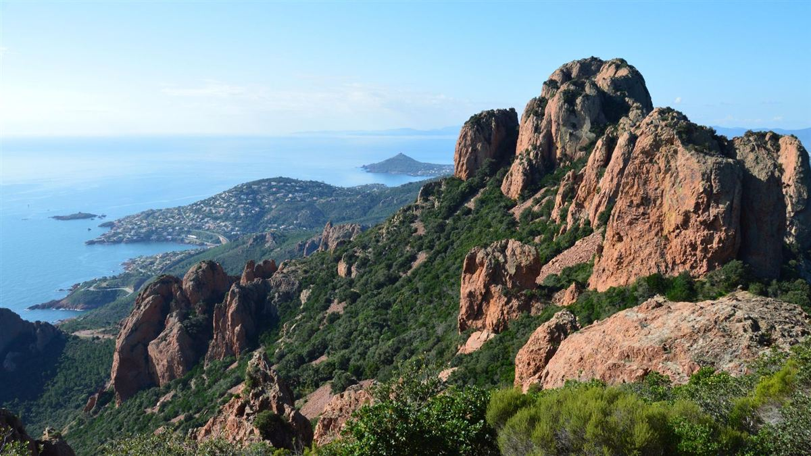

Permis B96
355 €
- Frais de dossier
- 2 heures de théorie
- 2 heures hors circulation
- 3 heures en circulation
- Sans examen
Permis B96 et BE · caravane, van, remorque · Fréjus
Selon le poids de votre attelage, le permis B suffit, ou il vous faut la formation B96 ou le permis BE. Nous vous aidons à choisir, puis à maîtriser l'attelage sur plateau et sur route.

Quel permis pour votre attelage ?
Tout dépend du poids total autorisé en charge (PTAC) de la remorque et de l'ensemble voiture + remorque.
Remorque jusqu'à 750 kg, ou au-delà si le poids total de l'ensemble ne dépasse pas 3,5 tonnes.
Ensemble de plus de 3,5 t et jusqu'à 4,25 t : 7 heures de formation, sans examen. Idéal pour une caravane ou un petit van.
Au-delà, pour une remorque jusqu'à 3,5 tonnes : formation pratique et examens plateau et circulation.
Déroulement
Une progression concrète, de l'attelage à la conduite sur route.
Nous vérifions avec vous les poids de votre véhicule et de votre remorque pour choisir entre B, B96 et BE.
Atteler et dételer, vérifier l'attelage, manœuvrer en marche arrière et maîtriser le gabarit de l'ensemble.
Anticiper, freiner, s'insérer et négocier les virages avec une remorque, en toute sécurité.
B96 : attestation délivrée à l'issue des 7 heures. BE : nous vous accompagnons aux examens plateau et circulation.
Bon à savoir
Le poids total autorisé en charge (PTAC) figure sur la carte grise : rubrique F.2 pour la voiture et pour la remorque. C'est la somme des deux qui détermine le permis nécessaire.
Un doute ? Apportez vos cartes grises ou envoyez-nous une photo : nous vous indiquons la formation adaptée avant toute inscription.
Nos forfaits
Accueil, constitution du dossier et fournitures pédagogiques compris. Tarifs TTC, effectifs au 12/04/2026.
355 €
1 065 €
1 165 €
Non compris : redevance de 30 € pour la présentation à l'examen · leçon remorque supplémentaire 70 € en groupe, 90 € en individuel. Voir tous nos tarifs →
Questions fréquentes
Avec le permis B, vous pouvez tracter une remorque de 750 kg maximum, ou plus lourde si l'ensemble voiture + remorque ne dépasse pas 3,5 tonnes. Jusqu'à 4,25 tonnes, la formation B96 suffit ; au-delà, il faut le permis BE.
Le B96 est une formation de 7 heures, sans examen, pour un ensemble de 3,5 à 4,25 tonnes. Le permis BE permet de tracter une remorque jusqu'à 3,5 tonnes ; il demande une formation plus longue et des examens plateau et circulation.
La formation B96 est à 355 €. Le permis BE est à 1 065 € sans code et 1 165 € avec le code, accompagnement aux examens compris. La redevance d'examen (30 €) est en plus.
Sept heures : 2 heures de théorie, 2 heures hors circulation et 3 heures en circulation. L'attestation est délivrée à l'issue de la formation, sans examen.
Une question, un devis, une inscription : nous vous répondons rapidement.